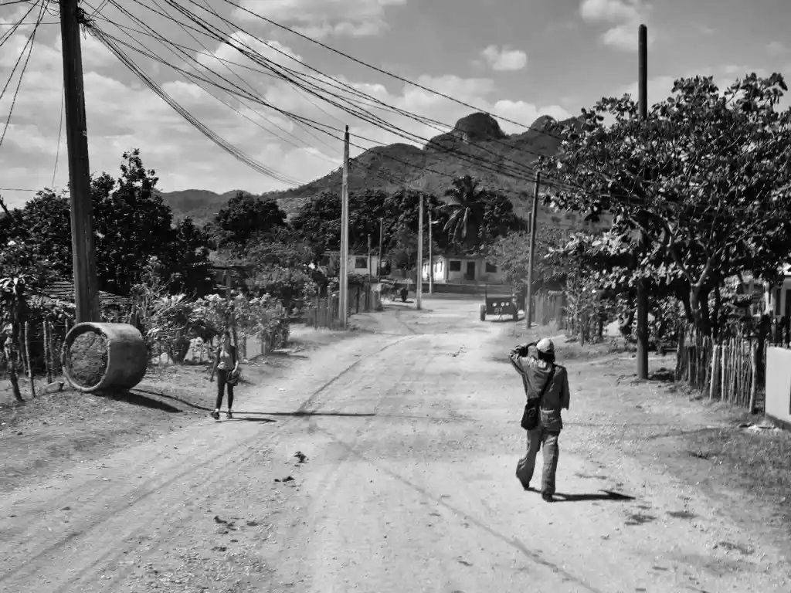
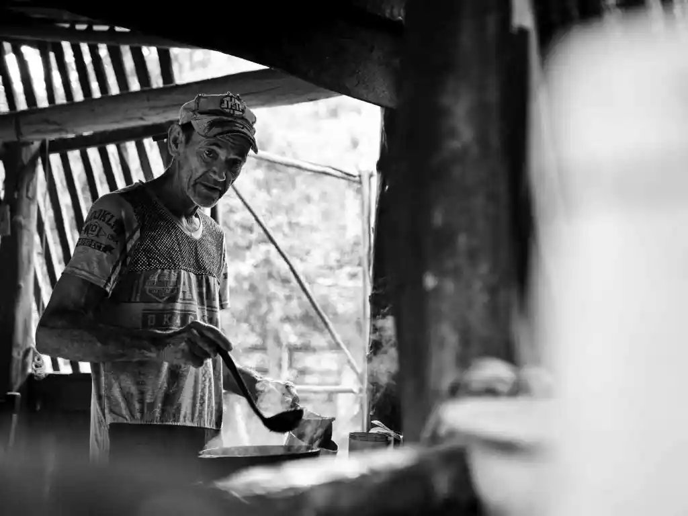
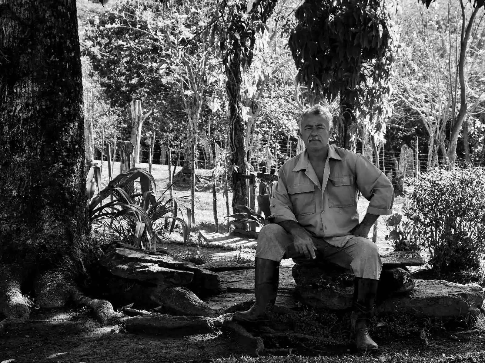

En los años noventa yo estudiaba en Santa Clara. Y un día subí por primera vez al Escambray.
El país estaba bastante jodido. En el Coppelia vendían helado de toronja. La hamburguesa era de pescado y tenía espinas. Y para llegar a los municipios te montabas en los camiones de la caña, en plena zafra.
Una tarde llegué a Gavilanes. Llevaba no sé cuántas horas caminando monte adentro.
Un riachuelo de agua transparente. Una poceta grande. Detrás, los bohíos.
Un grupo de niños jugaba pelota. Las familias miraban desde los portales, gritaban, hacían bromas y celebraban cada jugada como si fuera la Serie Nacional.
El muchacho del center field tenía una especialidad... tirarse a la poceta para atrapar la pelota en el aire.
Aquello era una fiesta.

Hice unas fotos. Esa imagen se me quedó dentro durante años.
Y se me quedó también una pregunta. ¿Eran felices aquellos guajiros? ¿Más que los que vivíamos en la ciudad? ¿Y qué demonios es, al final, la felicidad?


Han pasado treinta años. Todavía no tengo la respuesta.
Pero no he dejado de buscar historias.